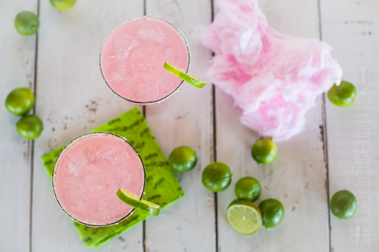

- 


If you don’t know I’m a margarita lover by now, now you know. This page has many different margarita recipes from drinks to food!

This recipe is simple, requiring just 10 minutes and less than 10 ingredients! And it’s extremely customizable.
I hope you’ll try your hand at these super fun, nostalgic margaritas. Technically, maybe margaritas shouldn’t be nostalgic. But for those of us who broke the law in our youth–well, you get the idea.
These bars are super easy and they’re the perfect dessert for summer, especially if you’re throwing a Cinco de Mayo party.
A tropical spin on the classic drink! These Skinny Coconut Margarita are made with lite coconut milk, coconut water, tequila blanco and triple sec for a refreshing cocktail! .
These margs are slightly orange-flavored with a hint of coconut water and canned coconut milk – this is one of the only instances where I will tell you that light coconut milk is better. .
And like my other favorite skinny cocktail, this sugar free margarita should help you avoid any hangovers the next day.
All you need to make this gorgeous summer cocktail is some Triple Sec, lime juice, and of course, tequila.
Do you ever have those days when you want to celebrate just because it’s 5 o’clock?